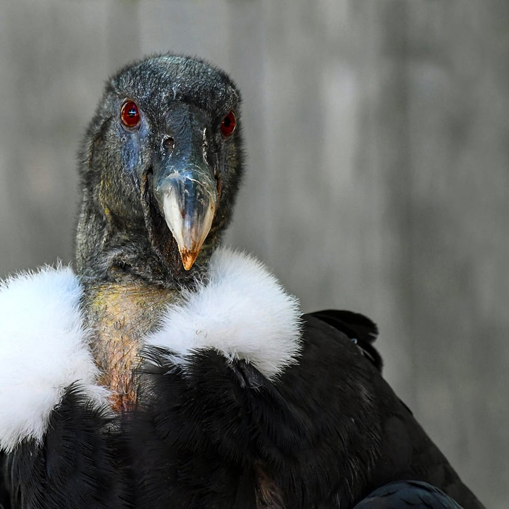
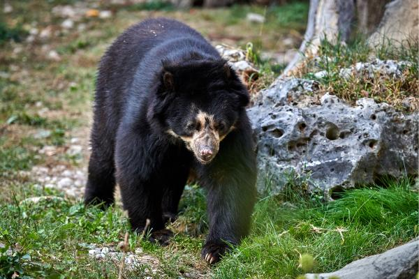

Flora y Fauna de Cundinamarca
Flora
- espadaña
- Guaba
- Buchón de agua
- lirio acuático
- helecho de agua
Fauna
- la Garza
- Pasto Kikuyo
- Barbasco
- Botoncillo
- trucha arcoíris
- Parula
El helecho de agua (Azolla japonica) es una especie de helecho de la familia Azollaceae, nativa de regiones templadas de América. Es el género de plantas con reproducción anfimíctica (es decir, con intervención sexual) más extenso entre las angiospermas (plantas con flores y frutos). Son hierbas de 30 cm a 3 m de altura, con hojas simples alternas, apuntadas, con bordes rugosos. Frecuentemente el tallo es rosa o rojo. Las flores son blanco verdosas, en largas vainas al final de las ramas. Desarrollan drupas púrpuras negruzcas. Limnobium o Buchón de agua , es un género de plantas acuáticas perteneciente a la familia Hydrocharitaceae. Es originario de América. Es originaria de las aguas dulces de las regiones cálidas de América del Sur, en las cuencas Amazónica, y del Plata. Es usada como planta medicinal, fertilizante de suelos y decorativa; por fuera de su nicho original se la considera especie invasora. es una planta perenne herbácea del género Typha. Esta totora se encuentra en el Hemisferio Norte en lugares pantanosos. En Norteamérica, es una planta introducida. También se encuentra en algunos humedales de Perú y Chile.
Animales en vía de extinción
Condor de Cundinamarca
Oso de anteojos
Descubrimiento
Guaba
Contiene fitolacatoxina y fitolacigenina, venenosos para mamíferos
Son hierbas anuales, trepadoras ligeramente leñosas o arbustos débiles; tallos variadamente angulados. Esta planta contiene persicarina y taninos. En medicina, se usa contra diarrea (por el ácido tánico, que ayuda a cortar este tipo de afecciones). Las hojas frescas se utilizan, tópicamente, para cortar las hemorragias de heridas, resultando bastante eficaz a la hora de curar llagas y úlceras dérmicas. Myioborus, es un género de aves paseriformes perteneciente a la familia Parulidae. Todos sus miembros son originarios de América y reciben los nombres comunes de candelitas o chipes. Entre las 80 especies de que consta el género se encuentran hierbas cespitosas, estoloníferas y postradas, con una amplia diversidad de alturas (entre 15-800 cm) y hojas de anchuras que varían entre 3 y 35 cm, sin nervaduras cruzadas. Es un ave esbelta de color blanco adornada con plumas doradas o anaranjadas en la cabeza y cuello en la temporada de cría. Anida en colonias, generalmente cerca del agua y a menudo con otras aves zancudas. Sus nidos son plataformas de ramitas que coloca sobre los árboles y arbustos.es un pez eurihalino de agua dulce y de mar de la familia de los salmónidos, distribuido de forma nativa por el norte del océano Pacífico, desde el Japón pasando por el mar de Bering hasta Península de Baja California, en México, aunque de forma artificial ha sido introducida por el hombre en medio mundo. las principales especies vegetales son el Pasto Kikuyo, el Barbasco, el Botoncillo, el Buchón de agua, el lirio acuático, a Cortadera, la Espadaña, la Guaba, el Helecho de agua, Junco, el Junco pequeño, la Lenguevaca, la Lenteja de agua y la sombrilla de agua son los principales Una investigación permitió establecer el comportamiento de la tingua moteada, un ave endémica que habita en los humedales de Cundinamarca y Boyacá. Estos animales se encuentran en peligro de extinción por la poca vegetación y la contaminación de las aguas. Se reproducen cada 2 años, ponen un solo huevo que incuban ambos padres durante 58 días. El juvenil se mantiene con sus padres por más de un año. Llegan a la edad adulta a los 8 años y pueden vivir hasta 50 años. Se sabe que son monógamos durante toda la vida. La importancia del cóndor en el país es más cultural que ecológica: el cóndor está muy ligado a nuestras tribus indígenas, quienes lo llamaban el 'mensajero de los dioses'.
Fauna y Flora
El ecosistema a destacar que contiene el Departamento de Cundinamarca es Páramo. Éste se caracteriza por estar ubicado a
3.100 y 4.000 metros de altura sobre el nivel del mar. Razón por la cual sólo existe este ecosistema en países tropicales que
a esas alturas no cuentan con nieves perpetuas. Adicionalmente, por estar en la zona ecuatorial, reciben mayor cantidad y mejor
calidad de luz, razón por la cual le permite al ecosistema desarrollar una espesa vegetación.
Colombia tiene el 60% de los páramos del planeta Tierra, siendo Sumapaz el más grande del mundo con 266.250 hectáreas
(ubicado en el Departamento de Cundinamarca).
La principal importancia de este ecosistema es su función reguladora del recurso hídrico, puesto que condensan el agua
y la almacenan cuando hay exceso, pero cuando hace calor y es escasa, toda el agua almacenada empieza a descender paulatinamente,
por escurrimiento, al caudal de los drenajes que nacen allí.
Las grandes ciudades como Bogotá, Cali y Medellín se abastecen de los páramos, así:
- El Páramo de Belmira (ubicado en Antioquia) surte de agua a 64.000 personas de los municipios aledaños al páramo y a un millón de habitantes del Valle de Aburrá.
- El Páramo Chingaza aporta cerca del 80% de agua potable de alta calidad a Bogotá, ubicado en el Departamento de Cundinamarca.
- El Páramo Farallones de Cali contribuye a la provisión de los ríos con potencial hidroenergético que abastecen de energía a gran parte del país.
Los páramos albergan una riqueza biológica inigualable, puesto que las especies han tenido que evolucionar para adaptarse a las condiciones climáticas que ofrece este ecosistema. Dentro de la flora y la fauna que se encuentra en este ecosistema se encuentra:
Frailejón en Páramo Chingaza:se caracteriza por ser una planta leñosa con dos formas de vida: una caulirrosula que se trata de un tallo subterráneo o de hasta 12 metros de altura, con hojas agrupadas en forma de roseta al final del tallo; y la arbórea con hojas agrupadas al final de las ramas. Las hojas de esta planta están cubiertas con pelos para protegerse del frío y reciclar nutrientes.
Oso de anteojos, oso andino u oso Frontino (Tremarctos ornatus):Es el único oso que se encuentra en Sur América. Se caracteriza por tener una mancha blanca alrededor de los ojos y del pecho. Se alimenta de plantas y animales. Es solitario y sólo se junta con otros en tiempos de reproducción.
Tapir de montaña o danta (Tairus pinchaque):Es el mamífero más grande de los bosques Andinos, se caracteriza por su pelaje negro y abundante y labios blancos. Puede alcanzar un peso de 150 a 250kg y una altura de 90cm a 180cm. Se alimenta de hojas, tallos y frutos de la variedad de frutos que el ecosistema de páramo ofrece. Se encuentran más activos en bajas temperaturas y prefieren estar cerca del agua. Tienen muy bien desarrollado el sentido del olfato y audición, son fuertes y ágiles.
Es un género botánico que incluye pequeños árboles y arbustos. Representan la vegetación de gran parte de los Andes a 3.500 y 4.400 msnm.Actualmente el hombre ha destruido aproximadamente el 95% de los bosques de Polylepis. En el Departamento de Cundinamarca se encuentra el Páramo más grande del mundo, Sumapaz y el páramo Chingaza que también es de gran importancia por proveer del recurso hídrico a la ciudad más poblada de Colombia (Bogotá).
Es actualmente un Parque Nacional Natural protegido por un organismo que hace parte del Ministerio de Ambiente:
La Unidad Especial del Sistema de Parques Nacionales Naturales, se encuentra ubicado a una hora en carro desde Bogotá.
Este parque es una fábrica de agua, prueba de ello son las lagunas de Siecha y la laguna Chingaza. Además se encuentra el embalse de Chuza que es quien suministra el agua a la capital del país.
- Condor de los Andes
- Oso de anteojos
- Venado
- Tigrillo
- Tucán
 Páramo Sumapaz
Páramo Sumapaz
- Osos de anteojos
- Venado blanco: llamado así por su pelaje gris claro
- Águilas
- Cóndor de los Andes
- Danta de páramo: actualmente en peligro de extinción
Dentro del Departamento de Cundinamarca también se encuentran ecosistemas de bosques, humedales, entre otros. Sin embargo, la transformación de los ecosistemas realizada por el humano ha llegado a ser del 75%, poniendo en peligro la vegetación natural y eliminando el hábitat de la fauna que allí solía vivir.